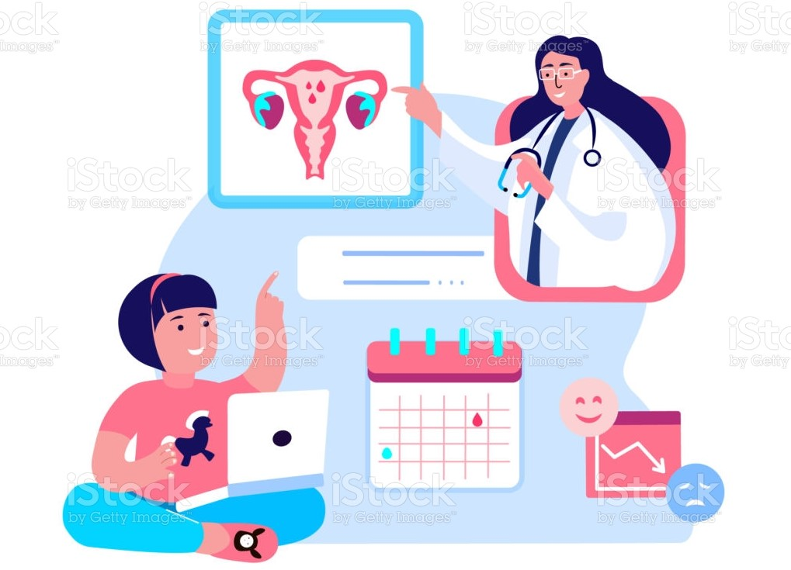

Pregnancy is often a happy, welcome, longed-for event, but discovering an unplanned pregnancy can be a shock! Symptoms such as nausea, fatigue, and increased appetite are early indicators of pregnancy but, if done correctly and at the right time, a simple home pregnancy test can tell you what you want to know. Pregnancy tests are widely available and easy to use—just a few drops of urine are needed to get a result. However, they are not 100% reliable, so it is best to consult your doctor or gynaecologist if you think you might be pregnant. Then you can get the information you need to decide what to do next.
The most accurate method of confirming pregnancy is a blood test done in a laboratory, but this takes time—sometimes several days—and it may be difficult to wait. Home pregnancy tests are sold over the counter in most pharmacies and can often be found in supermarkets and drugstores. These provide results much more quickly but are less accurate. A pregnancy test detects the presence of a hormone—human chorionic gonadotropin or hCG—in a woman’s blood or urine. Once an egg is fertilized and has implanted itself in the wall of the uterus, the developing embryo will begin producing hCG.


Assisted Reproductive Technology, or ART, is a blanket term for a number of medical procedures used to address issues concerning reproductive functions of the human body. Not everyone can have children naturally. With ART, science steps in to provide these people with a choice they would not have had otherwise. Ethically, this is a complicated matter, as any opportunity of artificially catering to instinct would be: fertility treatments have significantly increased the number of multiple pregnancies; ovarian stimulation can have serious side-effects; a child who was carried by a surrogate mother may wish to meet her against the wishes of the child’s legal parents. Factors like these require making difficult decisions.


Government schemes which are applicable for pregnant women: PM Jan Dhan Yojana: It is also known as the Pregnancy Aid Scheme. In India where more than 60% of the population lives below the poverty line, it becomes very difficult for a family to take good care of a pregnant woman. The aim of this program is to provide financial support to these women who can, in turn, nourish themselves and take proper medical aid during their pregnancy. Pradhan Mantri Surakshit Matritva Abhiyan: The Pradhan Mantri Surakshit Matritva Abhiyan was launched by the Ministry of Health & Family Welfare (MoHFW), Government of India. The program’s aim is to provide timely and quality antenatal care, free of cost, universally to all pregnant women on the 9th of every month. This yojana collaborates with private-sector doctors to volunteer for free and visit these places where there aren’t proper medical facilities. They conduct these health checkups at government hospitals.